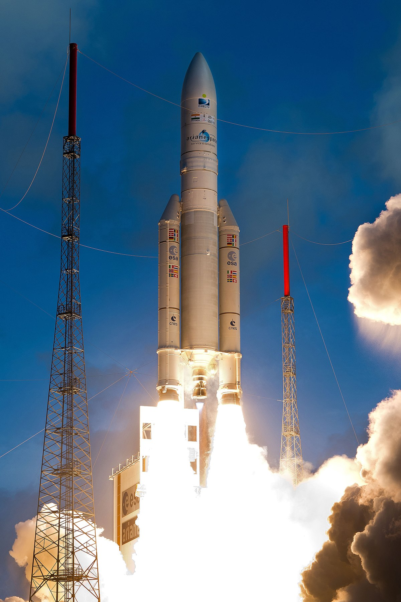

ArianeGroup n’était pas le nom d’origine de l’entreprise, le nom a été changé en passant d’Airbus Safran Launchers (ASL) à ArianeGroup. C’est une coentreprise entre Airbus et Safran créée en 2015. Elle développe, fabrique et commercialise principalement des lanceurs qui sont des fusées que l'on evoie dans l'espace pour pouvoir mettre des satellites en orbite.

Pour le lanceur Ariane5, le projet est confié à ArianGroup en 1985 par l’agence spatial européen(ESA) qui sont 22 états européens qui financent les projets pour l’espace. L’Ariane5 a pour rôle de mettre des satellites sur orbite géostationnaire mais principalement pour mettre des charges lourdes en orbite basse contrairement à l’ancienne fusée Ariane 4 créer pour mettre des satellites en orbite géostationnaire.
Imprévu
Il était censé y avoir une mini navette nommé « Hermès » pour transporter des spationautes avec une masse de 17 tonnes mais tout au long de la conception la masse de la navette augmente jusqu’à atteindre 21 tonnes, la navette étant trop lourde, ArianeGroup décide de réduire la masse de la fusée. Mais au final Hermès fût abandonné car coûtant trop cher.
L'assemblage
Après avoir fabriquées toutes les pièces de Ariane5. Elles ont été envoyées par bateau et assemblées en Guyane.
Lais les lancer des lanceurs Ariane5 sont compliqués, son premier lancement est un échec car le lanceur explose après 37 secondes de vol le 4 juin 1996. Le premier lancement commercial réussi d'Ariane 5 c’est déroulé en 1998. Le lanceur peut alors plusieurs satellites avec un seul lanceur. Le nombre de lancements d'Ariane5 est de 110 à ce jour avec un taux avec 5 échecs au total soit à peu près 95 % de lancer réussie. Le dernier lanceur Ariane 5 qui a été lancé à ce jour s’est déroulé le 30 juillet 2021 et il y a déjà deux lancements programmés, le 22 octobre 2021 et le 18 décembre 2021.
Voici une image de Ariane5:

©COPYRIGHT 2021-Tous droits Réservés